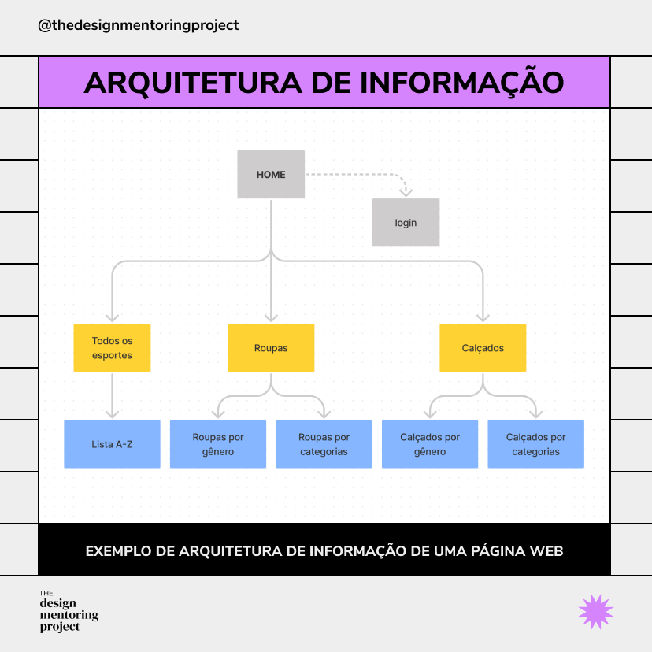

Módulo 3
Módulo 3: Double Diamond
Explore as quatro etapas do Double Diamond: Descobrir, Definir, Desenvolver e Entregar. Aprenda a investigar problemas, identificar oportunidades e construir soluções relevantes.

Conteúdo Programático
Acompanhe as aulas correspondentes a este módulo.
-
Aula 1
Aula 1 - Visão Geral do Framework
Compreenda a dinâmica de divergência e convergência do processo de design de inovação contínua.
-
Aula 2
Aula 2 - Descobrir e Definir
Aprofunde-se na imersão inicial para isolar o problema raiz e delimitar o escopo de atuação do projeto.
-
Aula 3
Aula 3 - Desenvolver Soluções
Gere e experimente alternativas criativas e estruturadas para responder às necessidades identificadas.
-
Aula 4
Aula 4 - Entregar e Testar
Valide as propostas construídas em cenários reais para garantir eficácia e aderência com o público.
-
Aula 5
Aula 5 - Estudo de Caso Prático
Analise a aplicação completa do framework integrando todas as fases metodológicas em um cenário real.